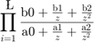
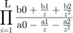

Contents
- cutoff_frequency: This is equal to the cutoff frequency of the filter.
- It is between 0 and 0.5 as the sampling rate of the filter is 1.
- insertion_loss_at_fc: This is equal to the insertion loss at the
- cutoff frequency of the filter in dB. If you want a standard IIR
- filter design just use [] in place of this input.
- transition_region_width: This is equal to the size of the region where
- the filter goes from ripple dB of insertion loss to rejection dB of
- insertion loss. It is equally sized about fc with half of it being
- lower than fc and the other half being higher than fc.
- ripple: This is equal to the ripple of the filter for f <= fp in dB
- rejection: This is equal to the rejection of the filter for f >= fs in dB
- Due to accuracy issues, using x = power(10,-insertion_loss_at_fc/10);
- is not allowed, instead you only get discrete steps, sorry.
- If the user specified a particular insertion loss adjust the filter
- parameters
- Generate the poles
- Perform the bilinear transform
- Solve for the filter coefficients
- You will see the a coefficients had - signs where mine do not in my
- derivation and this is becuase matlab defines the transfer function
- of a sos to be:
- while I define it to be:
function [sos fos k N] = Chebyshev_IIR_Filter_Designer(cutoff_frequency, ... insertion_loss_at_fc, ... transition_region_width, ... ripple, ... rejection)
cutoff_frequency: This is equal to the cutoff frequency of the filter.
It is between 0 and 0.5 as the sampling rate of the filter is 1.
insertion_loss_at_fc: This is equal to the insertion loss at the
cutoff frequency of the filter in dB. If you want a standard IIR
filter design just use [] in place of this input.
transition_region_width: This is equal to the size of the region where
the filter goes from ripple dB of insertion loss to rejection dB of
insertion loss. It is equally sized about fc with half of it being
lower than fc and the other half being higher than fc.
ripple: This is equal to the ripple of the filter for f <= fp in dB
rejection: This is equal to the rejection of the filter for f >= fs in dB
Due to accuracy issues, using x = power(10,-insertion_loss_at_fc/10);
is not allowed, instead you only get discrete steps, sorry.
if isvector(insertion_loss_at_fc) switch insertion_loss_at_fc case 3 x = 1/2; case 6 x = 1/4; case 9 x = 1/8; case 12 x = 1/16; case 15 x = 1/32; otherwise x = power(10,-insertion_loss_at_fc/10); end else x = []; end fsamp = 1; fp = cutoff_frequency - (transition_region_width / 2); fs = cutoff_frequency + (transition_region_width / 2); omega_p=2*pi*(fp/fsamp); omega_s=2*pi*(fs/fsamp); omega_c=2*pi*(cutoff_frequency/fsamp); eta = sqrt(power(10,ripple/10)-1); A2 = sqrt(power(10,rejection/10)-1); c = 1 / tan(omega_p / 2); pre_warped_omega_s = c*tan(omega_s/2); M = log((A2 / eta) + sqrt(power(A2 / eta,2) - 1)) / ... log((pre_warped_omega_s) ... + sqrt(power(pre_warped_omega_s,2) - 1)); N = ceil(M);
If the user specified a particular insertion loss adjust the filter
parameters
if isvector(x) omega_p = 2*atan(tan(omega_c / 2) ... / cosh((1 / N)*acosh( sqrt( (1 / x) - 1) / eta) ) ); c = 1 / tan(omega_p / 2); end
Generate the poles
p = [];
n = N;
gammav = power((1/eta) + sqrt(1+(1/power(eta, 2))), 1/N);
O1 = -(gammav - (1 / gammav)) / 2;
O2 = (gammav + (1 / gammav)) / 2;
while n
sigma = O1*sin(((2*n - 1)*pi)/(2*N));
omega = O2*cos(((2*n - 1)*pi)/(2*N));
p = [p sigma+j*omega];
n = n - 1;
end
Perform the bilinear transform
bilin = @(s,c) (1+s./c)./(1-s./c);
z = bilin(p,c);
Solve for the filter coefficients
a = [];
b = [];
sos = []; fos = [];
n = N;
Z = length(z);
while Z
if mod(Z, 2)
a = [a 1 real( z(((Z+1)/2)) )];
b = [b 1 1];
fos = [1 1 1 -real( z(((Z+1)/2)) )];
z = [z(1:(((Z+1)/2)-1)) z((((Z+1)/2)+1):end) ];
n = n - 1;
else
a = [a 1 real(z(1) + z(end)) real(-z(1)*z(end))];
b = [b 1 2 1];
sos = [sos; 1 2 1 1 -real(z(1) + z(end)) -real(-z(1)*z(end))];
z = z(2:end-1);
n = n - 2;
end
Z = length(z);
end
You will see the a coefficients had - signs where mine do not in my
derivation and this is becuase matlab defines the transfer function
of a sos to be:

while I define it to be:

%%% Calculate the filter gain k if mod(N, 2) prod = (b(1)+b(2)) / (a(1)-a(2)); start_index = 3; else prod = (b(1)+b(2)+b(3)) / (a(1)-a(2)-a(3)); start_index = 4; end for i = start_index:3:length(a) prod = prod * ((b(i)+b(i+1)+b(i+2)) / (a(i)-a(i+1)-a(i+2))); end if mod(N, 2) k = 1 / prod; else k = (1 / sqrt(1 + power(eta, 2))) / prod; end end
Not enough input arguments.
Error in Chebyshev_IIR_Filter_Designer (line 26)
if isvector(insertion_loss_at_fc)